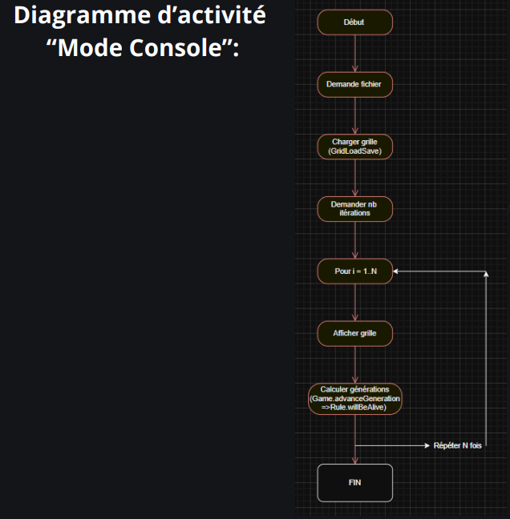

Simulation du Jeu de la Vie
Automate cellulaire développé en C++ (SFML & Console)
Note technique : Le Jeu de la Vie est un automate cellulaire imaginé par John Conway : une simulation mathématique où des cellules évoluent selon des règles de survie et de reproduction. L'évolution de chaque cellule dépend de ses 8 voisines directes.
- Survie : Reste en vie si elle a 2 ou 3 voisines vivantes.
- Mort : Meurt par solitude (<2) ou surpopulation (>3).
- Naissance : Devient vivante si elle a exactement 3 voisines vivantes.

I. Modélisation et Diagrammes UML
Diagramme de Classes
L'architecture repose sur une séparation stricte des responsabilités :
- Grid : Gère la matrice de
Cell. - Game : Coordonne l'évolution et les générations.
- Rule : Définit les conditions de survie/naissance.
- SFMLRenderer : Gère l'affichage graphique.

II. Logique de Fonctionnement
Mode Console vs Mode Graphique
Le projet propose deux workflows distincts :
- Console : Chargement fichier → Choix itérations → Affichage texte.
- Graphique : Menu UI → Rendu SFML temps réel.

III. Architecture du Projet
Fichiers En-tête (.hpp)
Grid.hpp, Game.hpp, Rule.hpp, Cell.hpp, SFMLRenderer.hpp
Fichiers Sources (.cpp)
Grid.cpp, Game.cpp, Rule.cpp, SFMLRenderer.cpp, main.cpp

IV. Algorithme des Règles (Rule.cpp)
bool Rule::willBeAlive(bool currentState, int aliveNeighbors) {
if (currentState) {
// Survie si 2 ou 3 voisins
return (aliveNeighbors == 2 || aliveNeighbors == 3);
} else {
// Naissance si exactement 3 voisins
return (aliveNeighbors == 3);
}
}